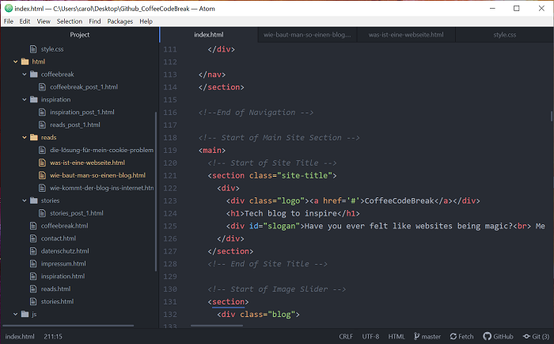

Why I built this blog myself
How did I create this blog? To be honest a bit unconventional. Since my plan was to practice programming and the idea for this blog came with practicing, I developed it from scratch. But from the beginning:Basically there are different possibilities to create your own website. If you are only interested in starting a blog, for example, you can use platforms like Wordpress or Wix. Here you can create websites without any programming skills and you can easily store and manage your texts, pictures and other content in a database. There are numerous websites and tutorials that give you useful tips if you want to create such a blog.
Since it was most important for me to turn my newly acquired programming skills into a project where I could experiment, my blog was created differently. Behind all the templates that platforms like Wordpress offer you, there is of course code. Someone has created these templates by writing the code for them. The result is that you can choose a template and place and design your content in it without having coding skills yourself.
So I thought about what I could build to practice programming. Some former colleagues had given me the advice to build a website where I could record my progress. A website that I might also share with potential employers when applying for a job. That sounded quite reasonable to me. So I decided to simply build this template myself and then fill it with some content. And I enjoyed it so much that it ended up becoming this blog.
Frontend basics - a rough overview
So what exactly did I do? There are numerous programming languages that are used for different purposes. To build a so-called 'web frontend' - the part you can see when you open a website - the three languages HTML, CSS and JavaScript are already sufficient. Actually, you can even create a website with pure HTML. However, this would not look very appealing. There are different frameworks and extensions to these languages that make development easier and more professional. So far I have used only HTML, CSS and JavaScript. And that worked out wonderfully for the beginning.Since I'm a very visual person and love to make beautiful things, I decided to go for frontend development. Therefore I first learned these three languages. But what exactly do HTML, CSS and JavaScript do and where do you even write this code?
Actually, it's nothing more than a folder structure that you can create on your laptop and then store files with your code in it. These files are not Word, Excel or PowerPoint files, but have the extensions .html, .css and .js.
You can create such files in an editor. An editor is a program in which you can write text - similar to a Word document. The great thing about such an editor is that it was developed especially for writing code. It supports you in programming, for example by colouring certain code pieces differently. There are several editors available, such as Atom or Visual Studio Code.
If you see a black window with colored text on a developer's laptop, that could be his editor. In my case it looks like this (on the left you see the folder structure where my files are stored and on the right a part of my HTML code for the start page):

HTML, CSS and JavaScript - a little introduction
So you create such a file, save it in your folder structure and then write your code into the file in the editor. In an HTML file you write the content you want your page to show. But HTML alone makes your page look pretty sad. When you open it in your browser (you can actually do this by simply dragging your HTML file into your browser window), you will only see your raw text, links and maybe some pictures.To make it all pretty, arrange your content nicely, give it color and aesthetics, you write your CSS code. I prefer to write it in my own CSS files, which I link to my HTML files. There are also ways to write CSS directly in your HTML files.
And if you now want to add interactions, JavaScript comes into play. With JavaScript you can, for example, make your page scroll back to the beginning by itself when you click on a certain symbol.
In summary: Everything you can read on my site in terms of content, I have written in HTML files. For example this post, but also my menu, my footer etc. The position of the individual texts and images, my fonts and colors I defined with CSS. And the slideshow on my homepage works by a small JavaScript code.
Programming languages are each written with their own grammar and vocabulary. This is the only way the browser understands how a web page should look when it loads it. (More about this in my blog post What turns code into a website?)
And exactly this writing of the code according to all its rules and the linking of the files to each other is the whole magic. I will go into more detail about the individual languages in other blog posts. So just have a look if you want to know more.
Just because I wrote my code does not mean that you can visit my website directly. Because my files are still only based on my laptop. That means I can view my site in my own browser, but everyone else can't. How to get a page on the internet is another matter. And you can read more about it here.
See you soon!
Caro
Leave a comment
Feel free to leave me a comment. Your e-mail address will not be published. The fields marked with a * have to be filled out to send the comment. It may take a few hours until your comment is published.